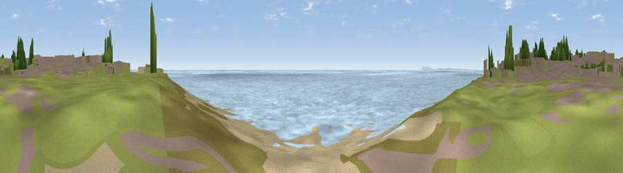

Viewpoint near Selsey
#43464 in England · top 95% of its area beats it · near SelseyThe view, rendered

A 360° render of this exact spot computed from the terrain model, tree cover and land cover — summer colours, afternoon light, calibrated against photographs of famous viewpoints. Real trees, hedges and buildings will differ in detail.
The panorama
Grey silhouette: terrain skyline in each direction (720 bearings, Earth curvature and refraction included). Dashed green: skyline with trees (+15 m) and buildings (+8 m) as obstacles. Blue strip: how far the ground is visible on each bearing.
Where the view opens
Wedge length = distance to the farthest visible ground on that bearing (vegetation-aware). Rings at 10, 25 and 50 km.
What fills the view
92% water · 3% grassland · 2% built-up · 2% woodland ·
Angular shares of the visible panorama (visual magnitude), not map area. Landscape diversity 0.16 (0–1 Shannon).
Key numbers
More beautiful places nearby
The staircase of upgrades: each row has a higher view potential than everything closer. Driving times are estimates from straight-line distance, calibrated against real road routing — check an actual route before setting out.
| Place | Direction | Drive | Score |
|---|---|---|---|
| Breach Viewpoint. | NW · 3 km | ~7 min | 44.6 |
| Ham Viewpoint | NW · 3 km | ~8 min | 47.0 |
| Stoke Clump | N · 17 km | ~30 min | 72.5 |
| Halnaker Hill | NNE · 19 km | ~32 min | 72.8 |
| Viewpoint near West Dean | N · 19 km | ~32 min | 74.1 |
| The Trundle | N · 19 km | ~32 min | 82.2 |
| Glatting Beacon | NNE · 24 km | ~39 min | 84.3 |
| Bignor Hill | NNE · 25 km | ~40 min | 84.4 |
50.72278, -0.78879 · source: osm viewpoint · position refined by local search. Computed location — check access rights before visiting.